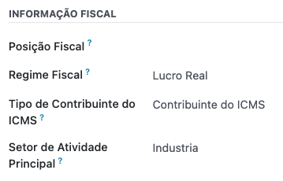
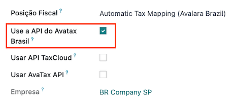
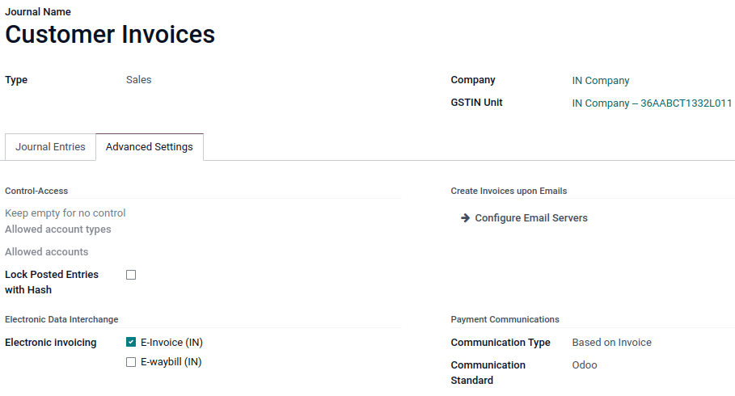
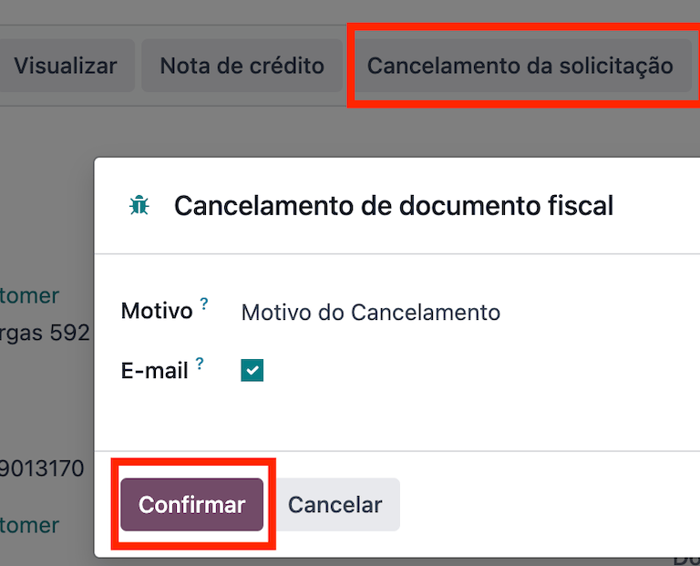
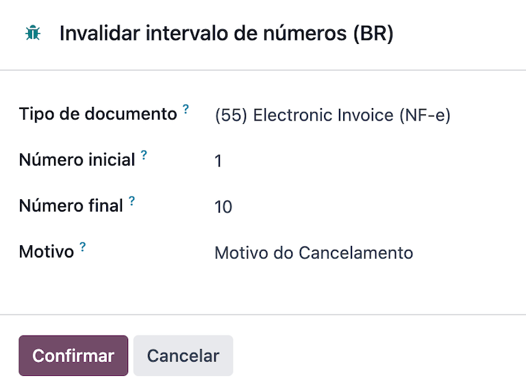
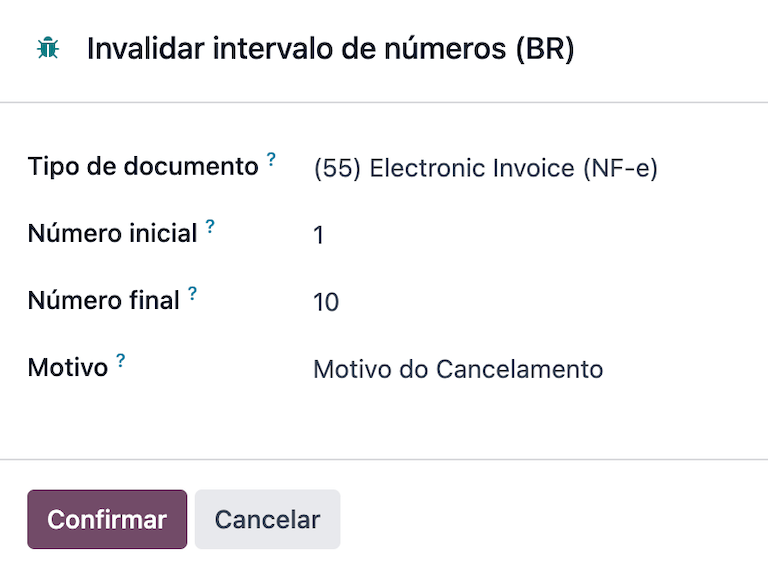
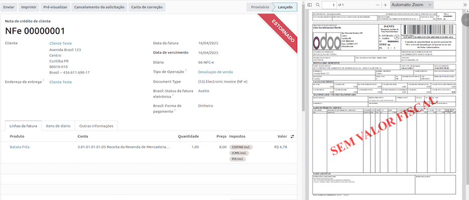

ブラジル¶
関連項目
Helpful resources for the Brazilian localization, including onboarding materials and videos:
モジュール¶
The following modules related to the Brazilian localization are available:
名称 |
技術名 |
説明 |
|---|---|---|
ブラジル - 会計 |
|
Brazilian fiscal localization package, complete with the Brazilian chart of accounts, taxes, tax report, fiscal positions, and document and identification types. |
ブラジル - 会計レポート |
|
ブラジル用会計レポート |
AvaTax Brazil, Avatax Brazil Sale & Test SOs for the Brazilian Avatax |
|
Avalaraによる物品サービス税計算。 |
Brazilian Accounting EDI |
|
Provides electronic invoicing through Avatax. |
Brazilian Accounting EDI For Sale |
|
Adds some fields to sale orders that are carried over the invoice. |
Brazilian Accounting EDI for POS |
|
Provides electronic invoicing through Avatax in the POS. |
Brazilian Accounting EDI for eCommerce |
|
Allows tax calculation and EDI for eCommerce users. |
Brazilian Accounting EDI for stock |
|
Adds delivery-related information to the NF-e. |
Brazil - Website Sale |
|
Allows tax calculation and EDI for eCommerce users. |
Brazil - Sale |
|
ブラジル用販売調整 |
Brazil - Sale Subscription |
|
ブラジル向け販売サブスクリプションの変更 |
注釈
The localization's core modules are installed automatically with the localization. The rest can be manually installed.
Localization overview¶
The Brazilian localization package ensures compliance with Brazilian fiscal and accounting regulations. It includes tools for managing taxes, fiscal positions, reporting, and a predefined chart of accounts tailored to Brazil’s standards.
The Brazilian localization package provides the following key features to ensure compliance with local fiscal and accounting regulations:
Chart of accounts: a predefined structure tailored to Brazilian accounting standards
Taxes: pre-configured tax rates, including standard VAT, zero-rated, and exempt options.
Fiscal positions: automated tax adjustments based on customer or supplier registration status.
Sales taxes can be automatically computed, and electronic invoices for goods (NF-e) and services (NFS-e) can be sent using AvaTax (Avalara) through API calls. Moreover, taxes for services can be configured.
For the goods and services tax computation and electronic invoicing process, configure the contacts, company, and products and create an account in AvaTax in the general settings.
For the services taxes, create and configure them from Odoo directly without computing them with AvaTax.
勘定科目表¶
In the chart of accounts, the accounts are mapped automatically to their corresponding taxes, and the default account payable and account receivable fields.
注釈
The Brazil chart of accounts is based on the SPED CoA, which provides a baseline of the necessary accounts.
税金¶
Taxes are automatically created and configured when installing the Brazilian localization. Avalara uses some to compute taxes on sales orders or invoices.
Taxes used for services must be manually added and configured, as the rate may differ depending on the city where the service is offered.
重要
For service taxes created manually, NFS-e can't be issued. To electronically send an NFS-e, compute taxes using Avalara.
警告
Do not delete taxes, as they are used for the AvaTax tax computation. If deleted, Odoo creates them again when used in an SO or invoice, and computing taxes with AvaTax. However, the account used to register the tax must be re-configured in the tax's Definition tab, under the Distribution for invoices and Distribution for refunds sections.
関連項目
プロダクト¶
To use the AvaTax integration on sales orders and invoices, enter the following information in the Sales tab of the product form under the Brazil Accounting section, based on how the product will be used.
商品用電子請求書 (NF-e)¶
CEST Code: code for products subject to ICMS tax substitution
Mercosul NCM コード: Mercosur共通名称 プロダクトコード
Source of Origin: origin of the product, which can be foreign or domestic, among other possible options, depending on the specific use case
SPED Fiscal Product Type: fiscal product type according to SPED list table
Purpose of Use: intended purpose of use for this product

注釈
Odoo automatically creates three products to be used for transportation costs associated with sales. These are named Freight, Insurance, and Other Costs and are already configured. If more need to be created, duplicate and use the same configuration:
Product Type Service
Transportation Cost Type: Insurance, Freight, or Other Costs
サービス用電子請求 (NFS-e)¶
Mercosul NCM コード: Mercosur共通名称 プロダクトコード
Purpose of Use: intended purpose of use for this product
サービスコード元: プロバイダが登録されている都市サービスコード
Labor Assignment: checkbox to select if service involves labor
Transport Cost Type: type of transport costs to select
Service Codes: City Service Code where the service will be provided; if no code is added, the Service Code Origin will be used.
Company and contacts¶
To use all the features of this fiscal localization, the following fields are required on the company record:
名前
住所: 追加 都市, 州/都道府県, 郵便番号, 国
町名番地 フィールドに、町名番地名、番号、その他の住所情報を入力します。
:guilabel:`町名番地2`フィールドに、住所詳細を入力します。
識別番号: CNPJ または CPF
登録番号: 識別タイプと関連済
IE: 州/都道府県登録
IM: 市町村登録
SUFRAMA code: マナウス自由貿易地区の監督 - 適用の場合追加
電話番号
Eメール

Configure the Fiscal Information within the Sales and Purchase tab:

Add the Fiscal Position for AvaTax Brazil.
税制: 連邦税制
ICMS 納税者タイプ: ICMS税制、 免税ステータス、または 非納税者
主な活動セクター
Configure the following extra Fiscal Information to issue NFS-e:
Add the Fiscal Position for AvaTax Brazil.
COFINS 詳細: 課税、非課税、税率0%で課税、非課税、一時停止
PIS詳細 課税、非課税、税率0%で課税、非課税、一時停止
CSLL Taxable if the company is subject to CSLL or not
注釈
If it is a simplified regime, the ICMS rate under must be configured.
The same configuration applies to the relevant contact form when using the AvaTax integration.
注釈
税ID(CNPJ)を持つ連絡先の場合は 会社 オプションを選択し、CPFを持つ連絡先の場合は 個人 をチェックします。
会計ポジション¶
To compute taxes and send electronic invoices on sales orders and invoices, both the Detect Automatically and the Use AvaTax Brazil API options need to be enabled in the Fiscal Position. To do so, go to . Then, open Automatic Tax Mapping (Avalara Brazil) and update it accordingly.
The fiscal positions can be configured:
either on the contact, in the Sales & Purchase tab under the Fiscal Information section;
or when creating a sales order or an invoice, in the Other Info tab under the Invoicing or Accounting section.
AvaTax統合¶
Avalara AvaTax is a tax calculation and electronic invoicing provider that can be integrated into Odoo to compute taxes automatically. It considers the company, contact (customer), product, and transaction information to retrieve the correct tax to be used and process the e-invoice afterward with the government.
This integration requires In-App-Purchases (IAPs) to compute taxes and send electronic invoices. To compute taxes, send an electronic document (NF-e, NFS-e, etc.), or perform any electronic flow (NF-e Cancellation, Correction letter, Invalidate invoice number range), an API call is made using credits from the IAP credit balance.
注釈
OdooはAvalara Brazilの認定パートナーです。
On creation, new databases receive 500 free credits.
認証情報設定¶
To activate AvaTax in Odoo, an account must be created. To do so, go to . In the AvaTax Brazil section, add the administration Email address for the AvaTax portal in AvaTax Portal Email, and click Create account.
警告
When testing or creating a production AvaTax Portal Email integration in a sandbox or production database, use a real Email address, as it is needed to log in to the Avalara Portal and set up the certificates, whether to test or use it on production.
Avalaraポータルには、テスト用と本番用の2種類があります:
When the account is created from Odoo, select the right environment. Moreover, the Email used to open the account cannot be used to open another account. Save the API ID and API Key when the account is created from Odoo.

After the account is created from Odoo, go to the Avalara Portal to set up the password:
Access the Avalara portal.
Click Meu primeiro acesso.
Add the Email address used in Odoo to create the Avalara/AvaTax account, and click Solicitar Senha.
An Email will then be received with a token and a link to create a password. Click on this link and copy-paste the token to allocate the desired password.
ちなみに
Start using AvaTax in Odoo for tax computation only, without creating a password and accessing the Avalara portal in the Odoo database. However, to use the electronic invoice service, you must access the AvaTax portal and upload the certificate there.

注釈
API credentials can be transferred. This option should be used only when an account has already been created in another Odoo instance and must be reused.
A1認証アップロード¶
To issue electronic invoices, a certificate must be uploaded to the AvaTax portal.
The certificate will be synchronized with Odoo as long as the external identifier number in the AvaTax portal matches - without special characters - with the CNPJ number, and the identification number (CNPJ) in Odoo matches the CNPJ in AvaTax.
重要
Some cities require the certificate to be linked within the City Portal system before issuing NFS-e from Odoo.
If an error message from the city that says Your certificate is not linked to the user is received, this process needs to be done in the city portal.
税計算¶
警告
Actions that trigger API calls for tax computation come with a cost. Be mindful of the actions that trigger these calls to manage costs effectively.
見積書と販売オーダの税金計算¶
API|コールをトリガとして、AvaTaxを使用して見積書または販売オーダの税金を自動的に計算します:
- 見積書検証
見積を確定して販売オーダに変換します。
- 手動トリガ
Click Compute Taxes Using AvaTax.
- プレビュー
Click Preview.
- Email a quotation/sales order
Send a quotation or sales order to a customer via Email.
- オンライン見積書アクセス
顧客がオンラインで(ポータルビュー経由で)見積書にアクセスすると、|API|コールがトリガされます。
請求書での税計算¶
Trigger an API call to calculate taxes on a customer invoice automatically with AvaTax in any of the following ways:
- 手動トリガ
Click Compute Taxes Using AvaTax.
- プレビュー
Click Preview.
- オンライン請求書アクセス
顧客がオンラインで(ポータルビュー経由で)請求書にアクセスすると、|API|コールがトリガされます。
注釈
会計ポジション は、これらのアクションのいずれかが自動的に税金を計算するためには、自動税金マッピング(アバララ・ブラジル) に設定する必要があります。
会計¶
電子ドキュメント¶
設定¶
A series number is linked to a sequence number range for electronic invoices. To configure the series number on a sales journal, go to and set it in the Series field. If more than one series is needed, a new sales journal must be created, and a new series number assigned for each series.
Enable the Use Documents? option as the Series field will only be displayed if the Use Documents? field is selected on the journal.
When issuing electronic and non-electronic invoices, the Type field selects the document type used when creating the invoice.
注釈
When creating the journal, ensure the Dedicated Credit Note Sequence field in the Accounting Information section is unchecked, as in Brazil, sequences between invoices, credit notes, and debit notes are shared per series number, which means per journal.
顧客請求書¶
To process an electronic invoice for goods (NF-e) or services (NFS-e), the invoice must be confirmed and taxes must be computed by Avalara. The following fields must be filled out:
顧客、全ての顧客情報と合わせて
Payment Method: Brazil: how the invoice is planned to be paid.
Document Type set as (55) Electronic Invoice (NF-e) or (SE) Electronic Service Invoice (NFS-e).
And in the Other Info tab:
Fiscal Position set as Automatic Tax Mapping (Avalara Brazil).
Some optional fields depend on the nature of the transaction. These fields in the Other Info tab are not required, so in most cases, leaving them blank will not result in errors from the government when the invoice is submitted:
Freight Model determines how the goods are planned to be transported - domestic.
Transporter Brazil determines who is doing the transportation.


Then, click Send. In the Print & Send window, click Process e-invoice and any other options - Download or Email. Finally, click Send to process the invoice with the government.
注釈
All fields available on the invoice used to issue an electronic invoice are also available on the sales order, if needed. When creating the first invoice, the Document Number field is displayed, allocated as the first number to be used sequentially for subsequent invoices.
クレジットノート¶
If a sales return needs to be registered, a credit note can be created in Odoo and sent to the government for validation.
注釈
クレジットノートは電子顧客請求書(NF-e)にのみご利用いただけます。
デビットノート¶
If additional information needs to be included or values that were not accurately provided in the original invoice need to be corrected, a debit note can be issued.
注釈
デビットノートは、電子顧客請求書(NF-e)でのみご利用頂けます。
Only the products included in the original invoice can be included in the debit note. While changes can be made to the product's unit price or quantity, products cannot be added to the debit note. The purpose of this document is only to declare the amount to be added to the original invoice for the same or fewer products.
請求書取消¶
It is possible to cancel an electronic invoice that the government validated.
注釈
Check whether the electronic invoice is still within the cancellation deadline, which may vary according to each state's legislation.
商品用電子請求書 (NF-e)¶
To cancel an e-invoice for goods (NF-e) in Odoo, click Request Cancel and add a cancellation Reason on the pop-up that appears. To send this cancellation reason to the customer via Email, enable the E-mail checkbox.
注釈
This is an electronic cancellation, which means that Odoo will send a request to the government to cancel the NF-e. It will then consume one IAP credit, as an API call occurs.
サービス用電子請求書 (NFS-e)¶
To cancel an e-invoice for services (NFS-e) in Odoo, click Request Cancel. In this case, there is no electronic cancellation process, as not every city has this service available. The user needs to manually cancel this NFS-e on the city portal. Once that step is completed, they can request the cancellation in Odoo, which will cancel the invoice.
訂正レター¶
A correction letter can be created and linked to an electronic invoice for goods (NF-e) that the government validated.
To do so in Odoo, click Correction Letter and add a correction Reason on the pop-up that appears. To send the correction reason to a customer via Email, enable the E-mail checkbox.

注釈
訂正レターは、電子顧客請求書(NF-e)でのみ利用できます。
請求書番号範囲の無効化¶
A range of sequences that are assigned to sales journals can be invalidated by the government if they are not currently used and will not be used in the future. To do so, open the journal, click the (gear) icon, and select Invalidate Number Range (BR). On the Invalidate Number Range (BR) wizard, add the Initial Number and End Number of the range that should be cancelled, and enter an invalidation Reason.
 

注釈
無効な請求書番号範囲のドキュメントは、商品用の電子請求書(NF-e)にのみ使用できます。
注釈
The journal's chatter records the log of the cancelled numbers, along with the XML file.
仕入先請求書¶
When receiving an invoice from a supplier, encode the bill in Odoo by adding all the commercial information, together with the same Brazilian-specific information that is recorded on the customer invoices.
These Brazilian-specific fields are:
支払方法: ブラジル: 請求書がどのように支払われる予定か
Document Type: used by the vendor
Document Number: the invoice number from the supplier
貨物モデル: NF-e 特有 貨物の輸送計画 - 国内
輸送業者ブラジル: NF-e 特有 輸送を行う業者
Point of sale NFC-e¶
The NFC-e is a legal document that supports selling goods or merchandise to the final customer. Like the NF-e, the electronic customer invoice is also issued in XML file format and has an auxiliary document (DANFC-e) known as the NFC-e Summary. This electronic document can be issued through Odoo Point of Sale app.
Its legal validity is guaranteed by the digital signature and by each Brazilian state's SEFAZ (Secretaria da Fazenda).
関連項目
設定¶
Install the Brazilian Accounting EDI for POS (l10nbr_edi_pos)
module.
CSC details¶
Go to , scroll to the Taxes section. In the NFC-e configuration section, complete the following CSC (Taxpayer Security Code) fields:
CSC ID: The CSC ID or CSC Token is an identification of the taxpayer security code, which can have 1 to 6 digits and is available on your state's website of State Department of Finance (SEFAZ).
CSC Number: The CSC Number is a code of up to 36 characters that only you and the Department of Finance know. It is used to generate the QR Code of the NFC-e and ensure the authenticity of the DANFE.
注釈
The information required for these fields can be generated through the SEFAZ website of each Brazilian state by the company's accountant.
プロダクト設定¶
First, create a new product in POS, then in the Sales tab, configure the following Brazil Accounting fields:
CEST Code: A tax classification code identifying goods and products subject to tax substitution under ICMS regulations. It helps determine the applicable tax treatment and procedures for specific items. Check if the product is subject to this at https://www.codigocest.com.br/.
Mercosul NCM Code: NCM (Nomenclatura Comun do Mercosul) code from the Mercosur list.
Source of Origin: Indicates whether the product is of foreign or national origin, with different variations and characteristics depending on the product use case.
SPED Fiscal Product Type: Fiscal product type according to the SPED list table.
Purpose of Use: Shows what this product is used for.
Shop configuration¶
Go to and create a New shop. Choose an internal name for the new POS and save.
Then, go to and make sure that the correct Point of Sale is selected at the top of the screen. Then, scroll to the Accounting section and configure the Brazilian EDI fields:
Series
Next number: the next NFC-e number in the sequence to be issued, for instance, if the last number issued in SEFAZ is
100, the Next number will be101.
注釈
For the production environment, make sure that this information is updated.
Generating an NFC-e¶
First, open the Shop and make a sale.
After validating the payment, Odoo calculates taxes and issues an NFC-e. The valid NFC-e appears on the right side of the screen.
注釈
It is also possible to issue an NFC-e that identifies the customer by their CPF/CNPJ. To do so, click Customer, search for the customer if they are already registered, or click Create.
The following are mandatory fields to issue a CPF/CNPJ identified NFC-e:
名前
City and State where the invoice is being issued
CPF/CNPJ
After saving the register, click Validate. The NFC-e appears, highlighting the customer's CPF on the print.
Finally, select one of the two options to deliver the invoice to the customer:
Print
Send via e-mail
NFC-e ticket print¶
After generating and validating the NFC-e, click Print to deliver the invoice.
Example
This is the DANFC-e, the print of NFC-e when it is successfully issued, and shows all the important information that is legally required.¶
ちなみに
Using an Odoo IoT Box to integrate the print NFC-e through the Point of Sale app is unnecessary.
The Odoo NFC-e feature works with any thermal printer.
Re-issue PoS order with NFC-e error¶
If the NFC-e returns an error, correct the error first. Then, to re-issue the NFC-e, click the (menu) icon and select Orders.
Filter the list to show only Paid orders and click Details. The error will then be displayed, and the Send NFC-e button will be available.
注釈
If the error was fixed and the PoS Session was closed, Odoo indicates the tax adjustment on that journal entry in the chatter. The order's journal entry shows that the taxes were not calculated correctly. In that case, reprocessing the NFC-e is necessary.
NFC-e refunds & cancellations¶
Refunds can be created from Odoo, but cancellations must be done from the government portal.
重要
SEFAZ only allows cancellation of an NFC-e within 30 minutes of its issuance on the SEFAZ website. After this period, a manual refund must be processed, along with the issuance of a Return of Goods NF-e.
To issue a refund, click the (menu) icon and select Orders. Filter the list to show only Paid orders, open the order, and click Refund.
Choose the Payment method and Amount, then click Refund payment.
注釈
Alternatively, to reimburse and cancel the NFC-e through the backend, go to . Open the order, select the customer, and click Payment to reimburse. Then click Invoice to create the invoice and issue the Return of Goods NF-e.
When the process is finalized, the approved return NF-e is created, meaning the previous NFC-e is canceled.
